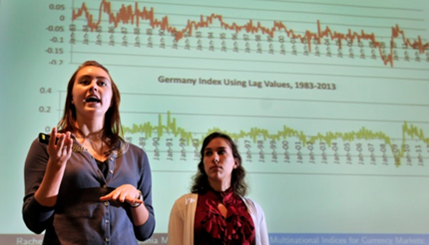

4-DAY WORKSHOP | July 14-17, 2014 |
Have you ever been asked:What is this math good for?When will I ever use this stuff? |
 |
| Toyota-RIT Applied Math Initiative |
Mathematical Sciences Department
Phone: 508-831-5241
Professor John Goulet
Email: goulet@wpi.edu
Ms. Rhonda Podell
Email: rpodell@wpi.edu
Professor Suzanne Weekes
Email: sweekes@wpi.edu